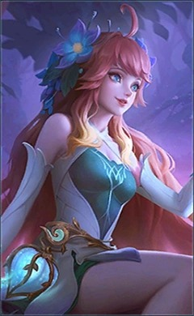
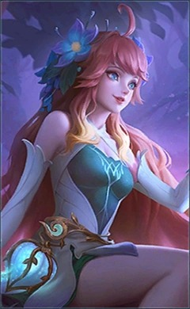
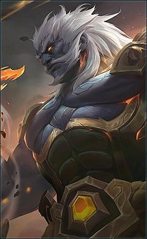
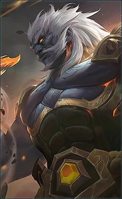
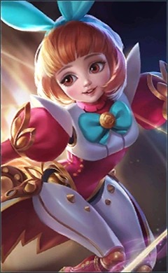
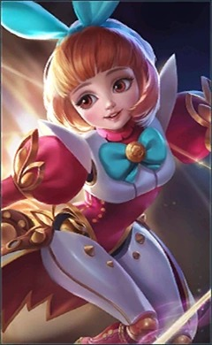
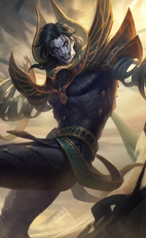
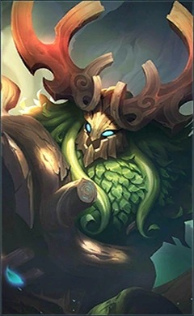
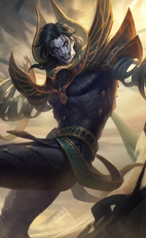
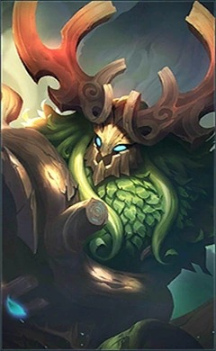

ROAM
Quien RECORRA, debe estar atento a las distintas lineas y brindar apoyo cuando sea necesario, lo que implica ayudar a los compañeros en enfrentamientos en el carril, emboscadas o defensa de torres. Su objetivo principal es garantizar que todas las lineas esten protegidas y que los compañeros esten seguros y respaldados.
El roaming debe coordinar y participar en emboscadas y ganks junto con otros jugadores del equipo. Tambien debe estar atento al lord, las tortugas y los buffs, debe protegerlos y ayudar a asegurarlos para el equipo. Su contribucion en todo el mapa es muy importante para que su equipo consiga la victoria.
Para recorrer se recomienda utilizar: APOYOS o TANQUES. Los apoyos son responsables de proteger y potenciar a su equipo. Pueden tener escudos, habilidades de curacion, de control o que aumenten eñ daño que sus compañeros pueden hacerle a los enemigos.
Los heroes de apoyo son esenciales para mantener la solidez del equipo y proteger a los miembros mas debiles durante las peleas. Por otro lado, los Tanques son heroes de alta resistencia y capacidad para realizar daño. Su objetivo principal es proteger al equipo, iniciar peleas y controlar el campo de batalla. Suelen ir en la linea delantera y tienen habilidades de control de masa para inhabilitar a los enemigos.
HEROES


 



 


 .
.


 



 


